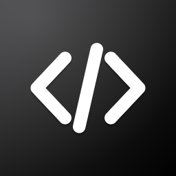

Source : https://rootatsblowfr.github.io/sileo/
StatusInfoRéseau, RAM, température et batterie sous l'heure.
ClipStackTout ton presse-papier, à un bouton du clavier.
AppVolumeChaque app retrouve son propre volume.
HomeKeyDouble, triple et appui long sur le bouton Home, à ta façon.
LiteUn iPhone 3 Go plus fluide : RAM, animations, batterie.

DevKitOverlay FPS / RAM / vue sous le doigt et dump d'entitlements.
CloakFaux identifiants, fausse position par app, journal des accès.